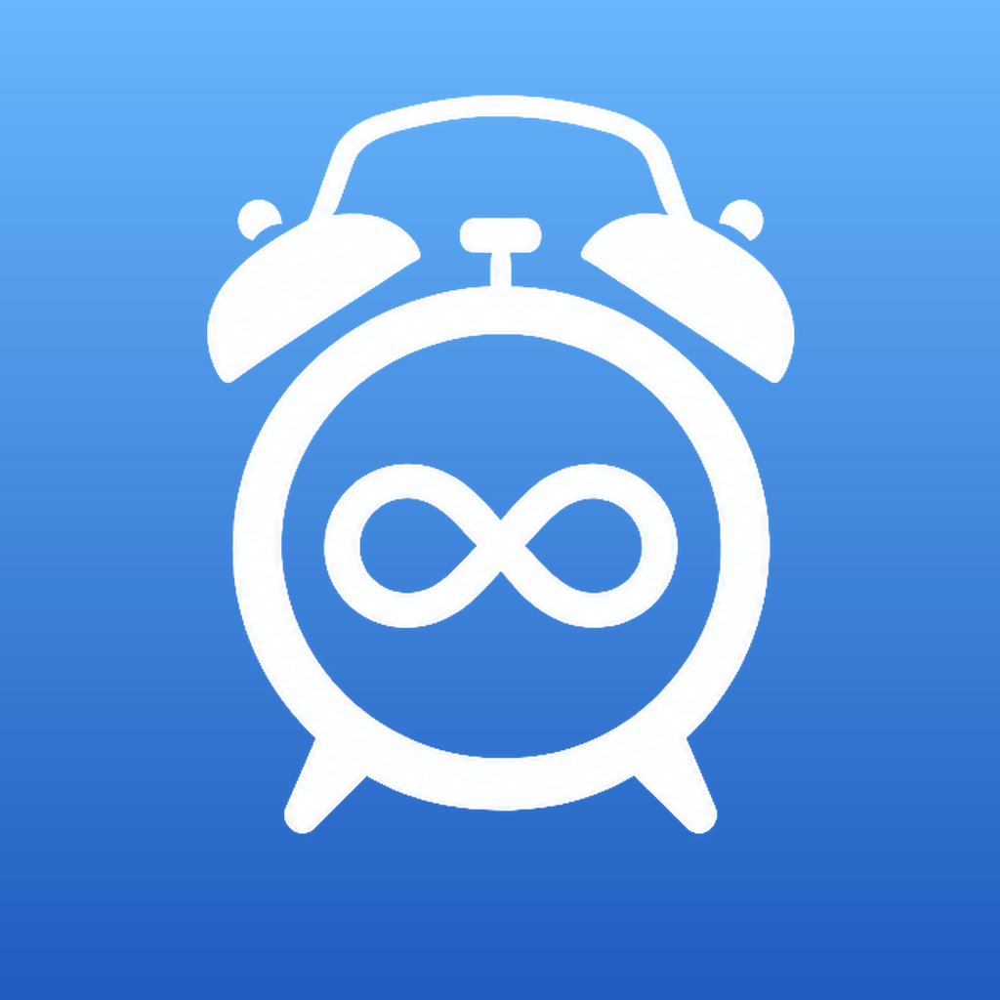
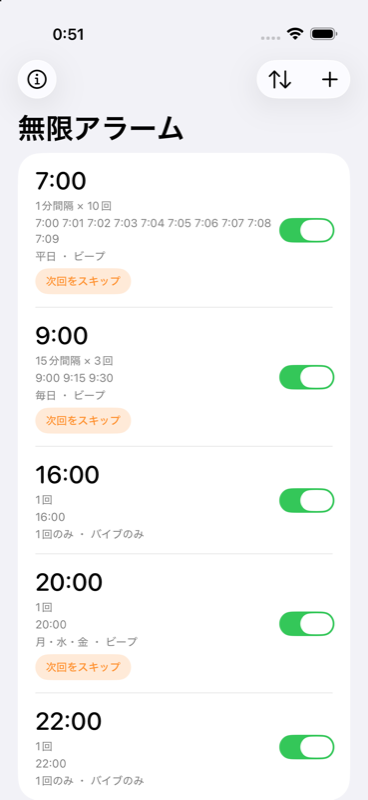
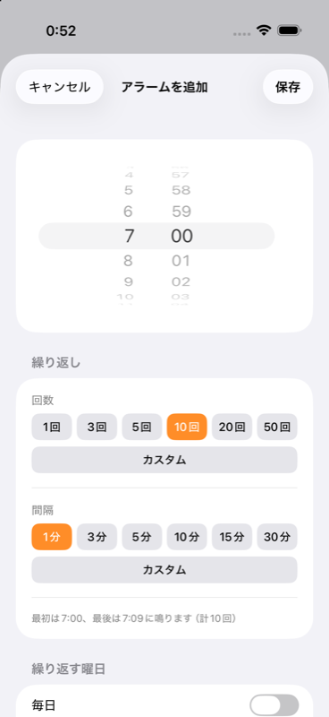
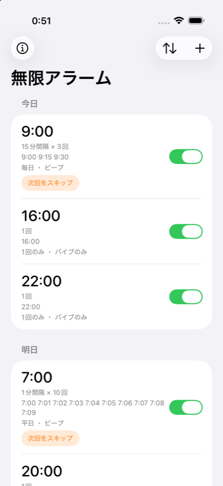
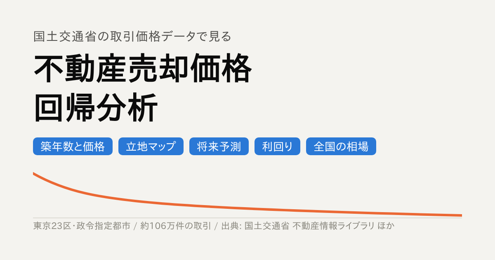
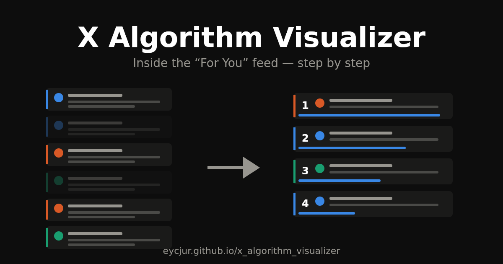
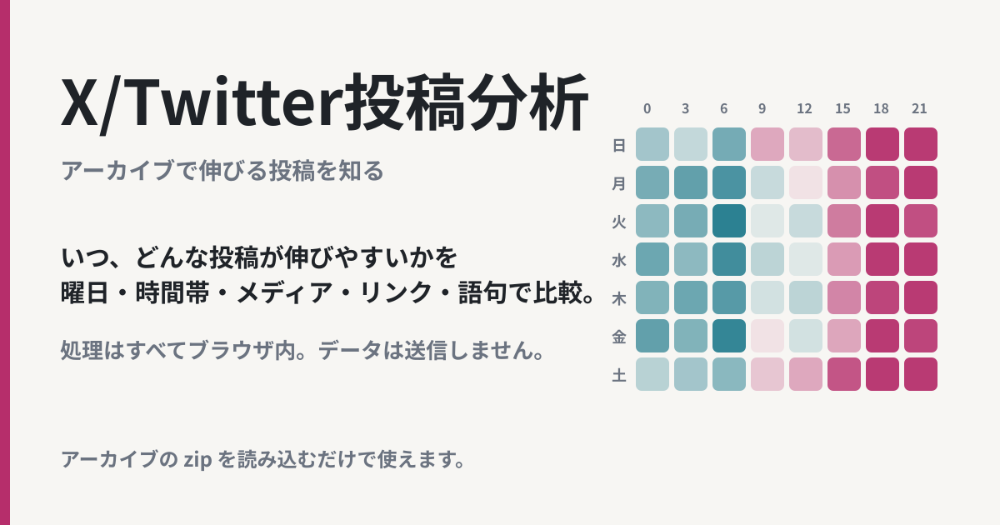
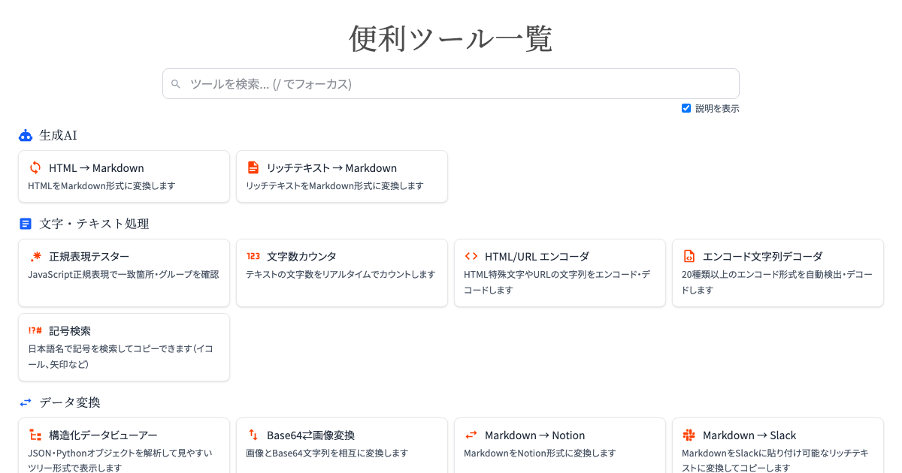

Products
プロダクト集
プライベートで作成しているプロダクト集です。
iOSアプリ

無限アラーム
設定は1回、アラームは何度でも。「7時から5分おきに3回」のように、開始時刻、間隔、回数を一度決めると、その回数だけ連続で鳴ります。二度寝しやすい朝向けです。
標準の時計アプリと同じ仕組みで鳴らすので、マナーモードや集中モードでも止まりません。明日だけ休みたいときは、次回だけスキップできます。iOS 26以降で使えます。



ブラウザで試せる
不動産売却価格 回帰分析
築年数が1年増えると、価格は何%下がるか。国土交通省の取引価格データ約106万件で、東京23区と政令指定都市の中古マンションと戸建を分析します。
区や駅徒歩などの条件を変えると、価格がどう動くかをグラフで確認できます。将来の人口推計を織り込んだ価格の試算や、ワンルーム投資などの想定利回りも出せます。

ブラウザで試せる
X Algorithm Visualizer
Xのおすすめに、なぜこの投稿が出るのか。X（旧Twitter）を開くと、フォローしていない人の投稿も混ざって出てきます。あの並び順は、裏で何段階もの選別を経て決まっています。
このページでは、その選別を一歩ずつ再生できます。投稿は教材用の作りものですが、計算の仕方は公開されている本家の式を使っています。

ブラウザで試せる
X/Twitter投稿分析
いつ、どんな投稿が伸びやすいか。Xのデータアーカイブを読み込み、曜日や時間帯、画像の有無といった特徴ごとに調べます。
処理はブラウザの中だけで行い、データはどこにも送りません。zipをドロップするだけで使えます。

ブラウザで試せる
困った時のツール集
ちょっとした変換や確認を、ブラウザで。正規表現のテスト、PDFの結合、画像の変換など、日常で詰まる作業を37個まとめています。
ツール名で検索できるので、必要なときにすぐ開けます。

VS Code拡張機能
Doc Translate
英語のプログラム説明を、その場で日本語に。海外のプログラムには、英語の説明がたくさん付いています。この拡張機能は、その説明だけを日本語に訳して、コードのすぐ横に表示します。
元のファイルは書き換えません。見た目だけが変わります。翻訳にはClaude、ChatGPT、Geminiなどを使えます。
ブラウザで遊べる
ゴミ分別ゲーム
上から落ちてくるゴミを、可燃、不燃、資源、粗大ごみの箱に入れます。ルールは渋谷区の分別です。制限時間は30秒です。
マウスでも、スマートフォンの指でも遊べます。
LINEスタンプ
IT系/エンジニアの日常会話
エンジニアがチャットでよく使う言い回しを、ロボットのキャラクターでスタンプにしました。「初めまして」「完全に理解した」など、現場で聞く言葉が並んでいます。
電子工作
自動運転ロボット
Raspberry Pi Picoで作った自動運転の工作です。前の障害物を見つけて、よけながら走ります。